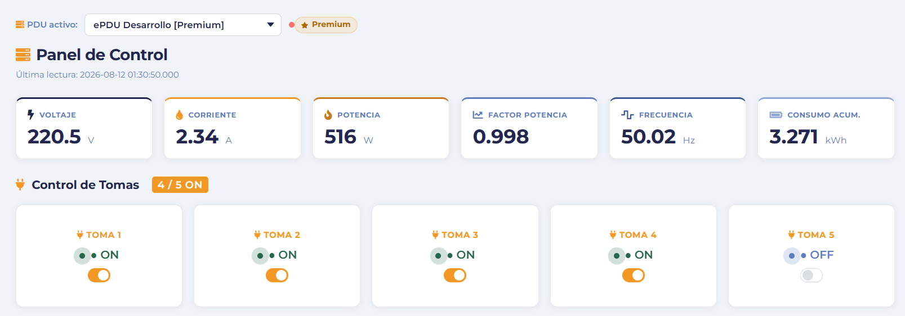
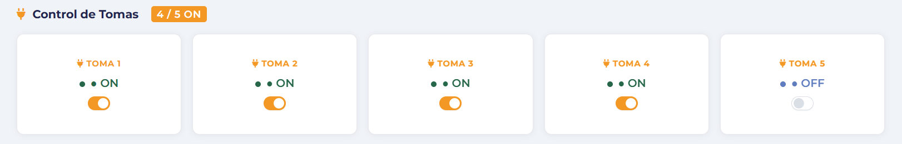

SmartRACK
ePDU Inteligente
Sistema de distribución de energía electrónica con monitoreo en tiempo real, control remoto por toma y comunicación segura vía MQTT sobre TLS. Desarrollado para AucaTek.
Registro de las modificaciones realizadas sobre la documentación y el alcance del proyecto SmartRACK. Cada cambio de requerimiento validado con el cliente (AucaTek) se registra como una fila nueva.
| Versión | Fecha | Responsable | Descripción del cambio |
|---|---|---|---|
| 1.0 | 22/08/2026 | Ezequiel Morgado | Creación del documento. Redacción de la Sección 2 — Introducción completa. |
| 1.1 | 04/09/2026 | Ezequiel Morgado | Cambio de formato de documentación: de documento Word a página web (GitHub Pages). Contenido sin modificaciones. |
| — | — | — | — |
El presente documento tiene como propósito describir de manera formal y detallada el sistema SmartRACK, una Unidad de Distribución de Energía Electrónica (ePDU) inteligente desarrollada para AucaTek. SmartRACK resuelve una necesidad concreta en entornos de infraestructura tecnológica: la imposibilidad de monitorear y controlar remotamente las tomas de corriente de un rack de servidores sin intervención física en el lugar.
Los administradores de datacenters y salas de servidores enfrentan problemas recurrentes como la incapacidad de detectar consumos anómalos en tiempo real, la necesidad de desplazarse físicamente para apagar o encender equipos conectados al rack, y la falta de registros históricos de consumo eléctrico. SmartRACK aborda estos problemas integrando hardware de medición eléctrica con un portal web accesible desde cualquier dispositivo con conexión a internet.
Este documento está dirigido al equipo de desarrollo del proyecto, al cliente (AucaTek) y a los evaluadores/profesores del Instituto Leonardo Murialdo. Sirve como referencia técnica durante el desarrollo y como evidencia formal de las decisiones de diseño tomadas.
SmartRACK en su versión 1 (MVP) comprende los siguientes componentes y funcionalidades:
| Componente / Funcionalidad | Incluido en v1 | Previsto para v2 |
|---|---|---|
| Control ON/OFF de 4 tomas inteligentes | Sí | Sí |
| Monitoreo eléctrico en tiempo real (V, A, W, PF, Hz, kWh) | Sí (Premium) | Sí (Premium) |
| Monitoreo de temperatura y humedad interna | Sí (Premium) | Sí (Premium) |
| Alertas por umbral con notificación por correo | Sí (Premium) | Sí |
| Portal web con 3 roles (Admin, Operator, Viewer) | Sí | Sí |
| Exportación de datos históricos en CSV | Sí (Premium) | Sí (Premium) |
| Sistema de licencias Normal/Premium | Sí | Sí |
| PCB fabricada y gabinete industrial | Sí | Sí (mejorado) |
| OTA (actualización de firmware inalámbrica) | No | Sí |
| Display OLED en el dispositivo | No | Sí |
| Broker MQTT propio (Mosquitto) | No | Sí |
| Soporte completo para múltiples PDUs simultáneos | ️ Parcial | Completo |
| Término / Acrónimo | Definición |
|---|---|
ePDU | Electronic Power Distribution Unit. Unidad de distribución de energía electrónica con capacidad de monitoreo y control remoto. |
PDU | Power Distribution Unit. Dispositivo que distribuye energía eléctrica a múltiples equipos en un rack. |
MQTT | Message Queuing Telemetry Transport. Protocolo de mensajería liviano basado en publicación/suscripción, diseñado para IoT. |
TLS | Transport Layer Security. Protocolo criptográfico que garantiza la comunicación segura a través de redes. |
PZEM | Módulo de medición de energía eléctrica AC fabricado por Peacefair. Mide voltaje, corriente, potencia, factor de potencia, frecuencia y energía acumulada. |
AHT10 | Sensor digital de temperatura y humedad fabricado por AOSONG Electronics. Comunicación I2C. |
ESP32 | Microcontrolador de doble núcleo fabricado por Espressif Systems. En este proyecto se usa exclusivamente con Ethernet (sin WiFi). |
W5500 | Controlador Ethernet hardwired fabricado por WIZnet. Implementa el stack TCP/IP en hardware, conectado al ESP32 mediante SPI. |
UART | Universal Asynchronous Receiver-Transmitter. Protocolo de comunicación serie asíncrono. Usado por el PZEM-004T. |
I2C | Inter-Integrated Circuit. Protocolo de comunicación serie síncrono de dos hilos (SDA y SCL). Usado por el AHT10. |
SPI | Serial Peripheral Interface. Protocolo de comunicación serie síncrono de cuatro hilos. Usado por el W5500. |
broker | Servidor intermediario MQTT (HiveMQ Cloud) que gestiona los mensajes entre el ESP32 y el backend PHP. |
LWT | Last Will Testament. Mensaje que el broker publica automáticamente cuando el ESP32 se desconecta abruptamente. |
CSRF | Cross-Site Request Forgery. Ataque de falsificación de solicitudes entre sitios. Mitigado con tokens de sesión. |
- Espressif Systems. (2024). ESP32 Series Datasheet (v5.3). espressif.com
- Espressif Systems. (2024). ESP32 Technical Reference Manual (v5.1). espressif.com
- Peacefair. (2019). PZEM-004T V3.0 User Manual. innovatorsguru.com
- AOSONG Electronics. (2020). AHT10 Technical Manual. eca.ir
- WIZnet. (2013). W5500 Datasheet v1.1.0. wiznet.io
- HiveMQ. (2026). MQTT Essentials. hivemq.com
- HiveMQ. (2026). HiveMQ Cloud Documentation. hivemq.com
- OPEnSLab — Oregon State University. (2022). SSLClient Library for Arduino. GitHub
- Knolleary. (2023). PubSubClient — MQTT library for Arduino. GitHub
- Tabler. (2023). Tabler — Open Source Dashboard Template. tabler.io
- Chart.js Contributors. (2023). Chart.js. chartjs.org
- The PHP Group. (2024). PHP 8.2 Manual. php.net
- alwaysdata. (2024). Documentación de la plataforma alwaysdata. alwaysdata.com
- OASIS Open. (2019). MQTT Version 5.0 — OASIS Standard. oasis-open.org
SmartRACK es un sistema de distribución de energía electrónica inteligente (ePDU) diseñado para entornos de rack de servidores y equipamiento de red. El producto integra hardware embebido (ESP32 + módulo Ethernet W5500) con un portal web multirol accesible desde cualquier dispositivo con conexión a internet.
El sistema resuelve tres problemas medibles en la gestión de racks: la imposibilidad de controlar las tomas de forma remota sin intervención física, la falta de visibilidad del consumo eléctrico en tiempo real, y la ausencia de alertas automáticas ante condiciones de operación anormales.
Público objetivo: datacenters, salas de servidores y empresas de IT que necesitan visibilidad y control sobre su infraestructura eléctrica sin invertir en soluciones comerciales de alto costo.
Resultados del MVP v1: 4 tomas inteligentes con control ON/OFF remoto, medición eléctrica completa (V, A, W, PF, Hz, kWh) y ambiental (temperatura, humedad), sistema de alertas automáticas por mail, portal web con tres roles de acceso y sistema de licencias Normal/Premium.
SmartRACK es un sistema nuevo — no reemplaza ni mejora ningún producto existente en la infraestructura del cliente. Se integra a la red LAN existente mediante Ethernet por cable y al broker MQTT en la nube (HiveMQ Cloud) para la comunicación con el portal web.
Arquitectura en tres capas:
A nivel general, el sistema SmartRACK permite:
- Controlar individualmente cada una de las 4 tomas inteligentes (ON/OFF) de forma remota desde el portal web.
- Medir en tiempo real el consumo eléctrico global del rack: voltaje, corriente, potencia activa, factor de potencia, frecuencia y energía acumulada en kWh.
- Monitorear la temperatura y humedad interna del rack mediante el sensor AHT10.
- Generar alertas automáticas por correo electrónico cuando una métrica supera los umbrales configurados.
- Almacenar el historial de telemetría y permitir su exportación en formato CSV para análisis externo.
- Gestionar el acceso con tres roles diferenciados: Administrador, Operador y Visualizador.
- Operar localmente por IP en la LAN sin dependencia de internet, incluyendo un buffer offline para no perder datos durante cortes de conectividad.
| Tipo de usuario | Perfil | Actividades principales |
|---|---|---|
| Administrador | Administrador de IT o responsable técnico del rack. Conocimiento técnico alto. Acceso total al sistema. | Gestión de usuarios y PDUs, activación de licencias, control de tomas, visualización de telemetría, resolución de alertas, exportación CSV. |
| Operador | Técnico de soporte o guardia de turno. Conocimiento técnico medio. | Control de tomas ON/OFF, visualización de telemetría y alertas en tiempo real, exportación CSV. |
| Visualizador | Personal no técnico que necesita monitorear sin modificar el sistema. | Solo lectura: visualización de métricas, estado de tomas y log de eventos. |
El sistema se desarrolla íntegramente con software libre y de código abierto (PHP, MySQL, Arduino Core, librerías públicas). Las credenciales de acceso (broker MQTT, base de datos, SMTP) se almacenan en variables de entorno mediante phpdotenv y nunca se incluyen en el código fuente. El repositorio es privado en GitHub con el equipo docente como colaborador.
El GPIO12 del ESP32 es un pin de bootstrap y no puede usarse para control de relés. El módulo W5500 (USR-ES1) utiliza el bus VSPI del ESP32. El PZEM-004T requiere el puerto Serial2 (GPIO16/17). El AHT10 utiliza I2C en GPIO21/22. La fuente de alimentación debe proveer 5V estables con capacidad mínima de 2A para alimentar el ESP32, el W5500 y el módulo de relés.
El sistema se comunica con HiveMQ Cloud (broker MQTT externo) y con Gmail (SMTP para notificaciones). No se integra con ningún sistema ERP, CRM o software de gestión de datacenter externo en esta versión.
Autenticación con bcrypt, CSRF tokens en todas las operaciones de escritura, rate limiting de login (5 intentos / 10 minutos → bloqueo 15 minutos por IP, almacenado en base de datos), security logs, HSTS y CSP activos en producción.
Toda la interfaz, documentación y mensajes del sistema están en español. Los nombres de variables, funciones y endpoints del código están en inglés o español según el contexto.
Comunicación firmware-backend por MQTT 3.1.1 sobre TLS (puerto 8883). Comunicación cliente-portal por HTTPS. Comunicación SMTP por TLS (puerto 587, STARTTLS). Sincronización horaria por NTP (UDP, puerto 123).
El firmware mantiene un buffer circular en RAM de hasta 20 lecturas PZEM y 10 AHT10 durante la desconexión. Al recuperar la conexión MQTT, las lecturas pendientes se publican automáticamente con el flag is_buffered=1. El dashboard se actualiza por polling AJAX cada 10 segundos.
El sistema publica telemetría real medida por sensores físicos (PZEM-004T y AHT10). Los timestamps se sincronizan mediante NTP con offset UTC-3 (Argentina). El estado del dispositivo se determina por el campo ultimo_contacto en la base de datos, con umbral de 5 minutos para declarar offline.
Contraseñas almacenadas con bcrypt. Sesiones PHP con regeneración de ID. CSRF tokens en formularios de escritura. Rate limiting por IP en login. Security logs de todos los eventos de acceso. Headers de seguridad HTTP: HSTS, CSP, X-Frame-Options, X-Content-Type-Options. Comunicación MQTT cifrada con TLS (BearSSL sobre SSLClient). Credenciales en archivo .env nunca incluido en el repositorio.
- Se asume que el rack tiene conectividad Ethernet a la red LAN con acceso a internet.
- El sistema depende de HiveMQ Cloud para la comunicación MQTT. Si el broker no está disponible, el ESP32 opera en modo local y almacena telemetría en el buffer offline.
- El hosting en alwaysdata requiere disponibilidad del servicio para el acceso al portal web desde internet.
- Las notificaciones por correo dependen de la cuenta Gmail configurada en el archivo .env del servidor.
- El certificado TLS de HiveMQ es gestionado por Let's Encrypt. El archivo
trust_anchors.hincluye los certificados intermediario (YR1, válido hasta 2028) y raíz (Root YR, válido hasta 2032), por lo que la rotación del certificado leaf no requiere actualizar el firmware.
| Versión | Mejora prevista | Justificación |
|---|---|---|
| v2 | Broker MQTT propio con Mosquitto en servidor Claro | Eliminar dependencia de HiveMQ Cloud y reducir latencia. |
| v2 | OTA — actualización de firmware inalámbrica | Permitir actualizaciones sin acceso físico al rack. |
| v2 | Display OLED en el dispositivo físico | Mostrar métricas localmente sin necesidad del portal. |
| v2 | Soporte completo para múltiples PDUs simultáneos | Gestionar varios racks desde una sola cuenta. |
| v2 | Retención de datos configurable | Limitar el crecimiento de las tablas de telemetría. |
Los siguientes requisitos describen las funcionalidades que el sistema SmartRACK debe proveer. Cada requisito está identificado por un número único e incluye descripción detallada y prioridad de implementación.
telemetry_pzem. Disponible únicamente en Modo Premium.telemetry_aht10. Disponible únicamente en Modo Premium.pdu/{codigo}/alertas. El backend las registra en la tabla alertas, envía notificación por correo y evita duplicación verificando alertas activas del mismo tipo.codigo_pdu derivado de la MAC del ESP32, IP local, modo (normal/premium) y estado de conexión basado en el campo ultimo_contacto.is_buffered=1.login_attempts, no en sesión, para evitar evasión por eliminación de cookies.security_logs registra: login_exitoso, login_fallido, bloqueo_ip, csrf_invalido y acceso_denegado. Cada registro incluye evento, usuario (si aplica), IP, user agent y timestamp.El portal web es el único punto de contacto del usuario con el sistema a nivel de software. Está diseñado con criterio de usabilidad: estado del sistema comunicado de forma clara, actualizaciones automáticas sin recargar la página, y diseño responsive para acceso desde PC o celular.


El hardware del SmartRACK consiste en una placa principal (PCB) que integra el ESP32, el módulo W5500 y los relés, y una placa de anclaje para el sensor AHT10 y el módulo Ethernet, que permite el montaje atornillado dentro del gabinete.
| Componente | Interfaz | Pines ESP32 | Función |
|---|---|---|---|
| W5500 (USR-ES1) | SPI (VSPI) | SCK=18, MISO=19, MOSI=23, CS=5, RST=4 | Conectividad Ethernet 100 Mbps |
| PZEM-004T v3 | UART (Serial2) | RX2=16, TX2=17 | Medición eléctrica completa |
| AHT10 | I2C (Fast Mode) | SDA=21, SCL=22 | Temperatura y humedad |
| Relés Toma 1-4 | GPIO Digital | 26, 27, 32, 33 | Control ON/OFF de tomas 220V AC |
| Entropía TLS | ADC1 (solo entrada) | GPIO36 | Semilla aleatoria para handshake TLS |
| Componente | Versión | Rol en el sistema |
|---|---|---|
| PHP | 8.2+ | Lenguaje principal del backend. Procesa todas las peticiones HTTP, maneja la sesión, autenticación, roles y lógica de negocio. |
| MySQLi | 8.2+ | Interfaz de acceso a la base de datos MySQL en modo procedural con mysqli_real_escape_string(). |
| PHPMailer | 6.x | Librería para envío de correos vía Gmail SMTP con TLS. Usada para alertas, avisos de licencia y recupero de contraseña. |
| phpdotenv | 5.x | Carga variables de entorno desde el archivo .env. Evita hardcodear credenciales en el código fuente. |
| php-mqtt/client | 2.3.2 | Cliente MQTT para PHP. Usado en mqtt_worker.php para suscribir a todos los tópicos del broker y procesar telemetría, estados y alertas. |
| Componente | Versión | Rol en el sistema |
|---|---|---|
| Tabler.io | 1.0.0-beta20 | Framework UI basado en Bootstrap 5. Provee componentes visuales, cards, tablas y navegación. El layout es completamente custom (CSS propio) para evitar conflictos con los scripts de Tabler. |
| Chart.js | CDN | Renderiza el gráfico de líneas de potencia y voltaje en los dashboards Premium. |
| Font Awesome | 5.15.4 | Íconos vectoriales usados en el sidebar, botones, métricas y badges del portal. |
| Montserrat | Google Fonts | Tipografía principal del portal web. |
| Vanilla JS | ES6+ | Maneja el polling AJAX cada 10 segundos, el control de tomas, el modal de verificación de identidad y la navegación activa del sidebar. Sin jQuery ni frameworks. |
| Librería | Fuente | Rol en el firmware |
|---|---|---|
| Arduino core ESP32 | Espressif (Arduino IDE) | Core base del firmware. Provee el entorno de desarrollo, acceso a periféricos y funciones del sistema. |
| Ethernet.h | Arduino (built-in) | Control del chip W5500 vía SPI. Maneja la conexión Ethernet, DHCP y el stack TCP/IP en hardware. |
| SSLClient | OPEnS Lab — Noah Koontz | Implementa TLS sobre cualquier clase Client de Arduino. Envuelve EthernetClient para proveer comunicación MQTT cifrada con BearSSL. |
| PubSubClient | Knolleary | Cliente MQTT para Arduino. Maneja la conexión, suscripción a tópicos, publicación de mensajes y el loop de mensajes entrantes. |
| PZEM004Tv30 | dbuezas | Comunicación con el PZEM-004T v3 por UART. Provee métodos para leer voltaje, corriente, potencia, PF, frecuencia y energía. |
| AHTxx | enjoyneering | Comunicación con el AHT10 por I2C. Provee métodos para leer temperatura y humedad. |
| ArduinoJson | 6.x | Serialización y deserialización de JSON en el firmware. Usado para construir payloads MQTT y parsear comandos entrantes. |
| NTPClient | Fabrice Weinberg | Cliente NTP para sincronización horaria. Se conecta a pool.ntp.org con offset UTC-3 (Argentina). |
El siguiente diagrama muestra las 17 tablas de la base de datos MySQL del sistema SmartRACK y sus relaciones. Las tablas están agrupadas por área funcional mediante colores.
Figura 1. Diagrama Entidad-Relación de SmartRACK — 17 tablas. PK = clave primaria · FK = clave foránea.
Esta sección describe los protocolos y canales de comunicación utilizados en SmartRACK para el intercambio de datos entre el firmware, el backend y los servicios externos.
La comunicación principal entre el firmware del ESP32 y el backend PHP se realiza mediante MQTT v3.1.1 sobre TLS (puerto 8883) a través del broker HiveMQ Cloud. Esta comunicación es bidireccional: el firmware publica telemetría y alertas, y el backend publica comandos de control de tomas.
Telemetría eléctrica cada 30s: voltage_v, current_a, power_w, power_factor, frequency_hz, energy_kwh, timestamp.
Telemetría ambiental cada 60s: temperature_c, humidity_pct, timestamp.
Comando de control de toma N (1-4). Payload: {"command":"on"} o {"command":"off"}.
Confirmación del nuevo estado tras ejecutar un comando. Payload: {"state":1,"timestamp":"..."}.
Alerta de umbral detectada. Payload: {"tipo":"...","valor":X,"umbral":Y,"timestamp":"..."}.
Last Will Testament. Publicado automáticamente por el broker si el ESP32 se desconecta abruptamente.
La comunicación entre el navegador y el portal web se realiza por HTTPS en producción (alwaysdata). El portal combina rendering PHP con llamadas AJAX para actualización en tiempo real.
| Endpoint | Método | Descripción |
|---|---|---|
index.php | GET / POST | Login. POST procesa credenciales y establece la sesión. |
dashboard_admin.php | GET | Dashboard del Administrador. Requiere rol admin y sesión activa. |
dashboard_operator.php | GET | Dashboard del Operador. Requiere rol operator. |
dashboard_viewer.php | GET | Dashboard de solo lectura. Requiere rol viewer. |
toggle_outlet.php | POST | Cambia el estado de una toma. Requiere CSRF token válido. Publica comando MQTT al ESP32. |
get_telemetry.php | GET | Devuelve JSON con telemetría, estado de tomas y alertas activas. Usado por el polling AJAX cada 10 segundos. |
get_logs.php | GET | Devuelve JSON con los últimos 10 eventos del log del sistema. |
resolver_alerta.php | POST | Marca una alerta como resuelta. Requiere CSRF token. |
exportar_datos.php | POST | Genera y descarga un CSV con telemetría filtrada por fechas. Solo Modo Premium. |
verify_password.php | POST | Verifica la contraseña del usuario para operaciones sensibles. |
admin_usuarios.php | GET / POST | CRUD de usuarios. Solo Administrador. Requiere verificación previa de identidad. |
admin_pdus.php | GET / POST | CRUD de PDUs. Solo Administrador. |
cerrar_sesion.php | GET | Destruye la sesión activa y redirige al login. |
La comunicación con el sensor PZEM-004T v3 se realiza mediante UART (RS-485 simplificado) sobre el puerto Serial2 del ESP32 (RX2=GPIO16, TX2=GPIO17) a 9600 baudios. La librería PZEM004Tv30 abstrae el protocolo Modbus RTU. El ESP32 actúa como maestro y el PZEM como esclavo.
La comunicación con el sensor AHT10 se realiza mediante I2C a 400kHz (Fast Mode) sobre los pines SDA=GPIO21 y SCL=GPIO22 del ESP32. La dirección I2C del AHT10 es 0x38. La librería AHTxx abstrae la inicialización del sensor y la lectura de temperatura y humedad.
La comunicación con el módulo Ethernet W5500 (USR-ES1) se realiza mediante SPI en el bus VSPI del ESP32: SCK=GPIO18, MISO=GPIO19, MOSI=GPIO23, CS=GPIO5, RESET=GPIO4. El W5500 opera por polling — el pin INT queda sin conectar. La librería Ethernet.h expone una interfaz Client compatible con SSLClient y PubSubClient.
El envío de correos se realiza mediante PHPMailer conectándose a smtp.gmail.com en el puerto 587 con autenticación STARTTLS. La cuenta de correo y la contraseña de aplicación se almacenan en el archivo .env del servidor y nunca se hardcodean en el código fuente.
El firmware sincroniza la hora del ESP32 al arrancar mediante NTP (UDP, puerto 123) contra pool.ntp.org. Se aplica un offset de UTC-3 correspondiente a la zona horaria de Argentina (ART). La sincronización se renueva automáticamente cada 60 segundos. El timestamp resultante se incluye en todos los mensajes MQTT publicados por el firmware.
El cronograma del proyecto SmartRACK se organiza en 10 etapas que cubren desde la configuración inicial de entornos hasta la documentación y lanzamiento. La planilla completa con fechas y responsables se encuentra en el repositorio del proyecto.
| Etapa | Tareas principales | Estado |
|---|---|---|
| E0 · Inicio | Definición del alcance, equipo y herramientas. | Completa |
| E1 · Config. de entornos | Setup de GitHub, XAMPP, Arduino IDE, alwaysdata, HiveMQ Cloud. | Completa |
| E2 · Comunicación e integración | MQTT sobre TLS, integración ESP32-backend, firmware v1. | Completa |
| E3 · Validación | Pruebas de integración, corrección de bugs críticos. | Completa |
| E4 · Entorno web | Dashboard por roles, autenticación, exportación CSV. | Completa |
| E5 · Ensamble y testing | PCB, firmware v2.1, pruebas físicas, gabinete. | En curso |
| E6 · Deploy | Deploy en producción, HSTS, CSP, mqtt_worker. | Completa |
| E7 · Panel admin | Gestión de usuarios, licencias, alertas. | Completa |
| E8 · Ciberseguridad | Rate limiting, CSRF, security logs. | Completa |
| E9 · Documentación y lanzamiento | Documentación técnica, manual, video, entrega final. | En curso |
El equipo de desarrollo de SmartRACK es un grupo interdisciplinario conformado por estudiantes de séptimo año del Instituto Leonardo Murialdo, organizado bajo la supervisión académica de los profesores Diego Martini, Lourdes Pedaci, Maximiliano Ariza y Gisela Bianchi, y con AucaTek como empresa cliente. La estructura sigue un modelo de organización matricial orientado al proyecto.
| Nombre | Área | Herramientas principales | Responsabilidades |
|---|---|---|---|
| Ezequiel Morgado | Project Manager · Backend | XAMPP, VS Code, phpMyAdmin, alwaysdata, GitHub, Claude | Desarrollo del portal web, base de datos MySQL, integración MQTT, ciberseguridad, deploy en producción, gestión completa del proyecto. |
| Camilo Spinelli | Hardware y Firmware | Arduino IDE, GitHub, Claude | Firmware ESP32 y sensores. |
| Sofía Hermosilla | Frontend | VS Code, Chrome DevTools, Lighthouse, GitHub, Claude | Diseño e implementación de la interfaz web, dashboards por rol, bocetos en papel. |
| Violeta Martini | Diseño Industrial | Fusion 360, AutoCAD | Diseño del gabinete PDU v1/v2 y prototipo físico del dispositivo. |
| Ignacio Marticorena | Multimedia | CapCut, Runway ML, Kling AI, Adobe Illustrator | Logo del proyecto, identidad visual, video promocional. |
| Federico Sparta | Electrónica | Arduino IDE, KiCad, Claude | PCB v1/v2, desarrollo del código para sensores y ESP32. |
| Santiago Villarosa | Electrónica | Arduino IDE, KiCad, Claude | PCB v1/v2, desarrollo del código para sensores y ESP32. |
| Martín Barral | Asesor Técnico | AutoCAD, Fusion 360 | Revisión del diseño electrónico y PCB, construcción del prototipo físico v1. |
| Diego Martini | CEO AucaTek · Cliente | Google Sheets, WhatsApp | Definición de requerimientos, validación técnica y comercial, firma del contrato. |